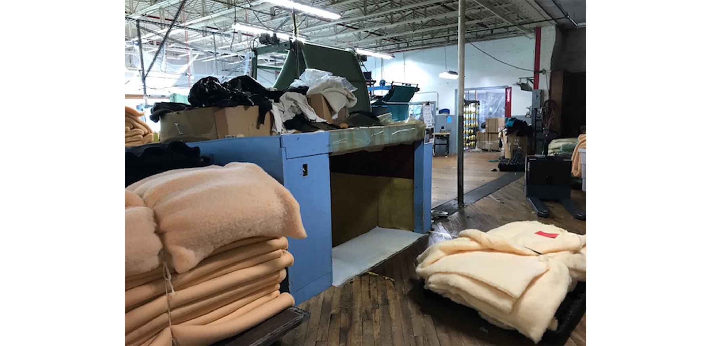
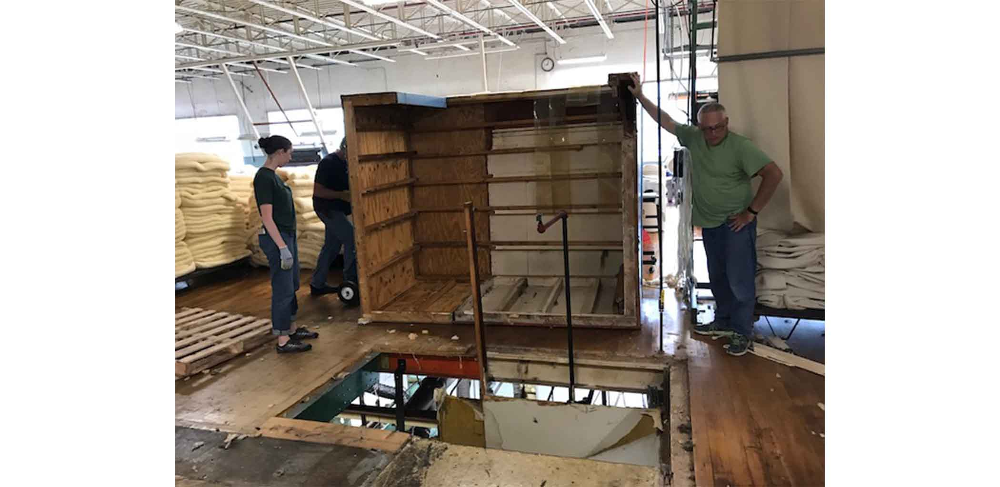
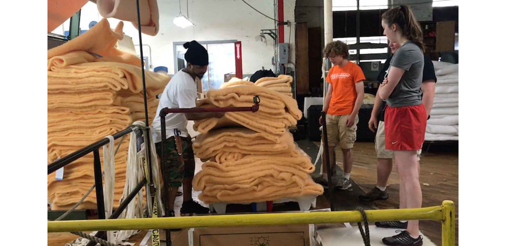

Textile Mill Production Redesign
During Summer 2017 I worked with a professor of anthropology at Olin and a team of three other students to do a research and design project with a 150 year old textile mill. After working different jobs throughout the factory we redesigned a part of the production floor in a four week project, using our experience on the floor and conversations with management and employees to better understand inefficiencies in the production line. We solved one of the company's largest bottlenecks on the floor and enabled the company to transfer large bundles of fabric down a chute rather than a freight elevator. Over the course of the project I developed skills in manufacturing engineering, consulting work with company managers, co-design with employees, rapid prototyping, and anthropological fieldwork.
We ultimately decided to redesign the chute used to transfer product (50-100 pound bundles of fabric) from upstairs to downstairs. The chute feeds into a machine on the bottom floor and must be stocked with product from a storage area upstairs. Originally, transferring product required that the employee in the quality assurance department stop what they were doing, bend into the box surrounding the chute, determine if the chute must be loaded, obtain a fabric bundle, and flip it onto the floor and into the chute. As we worked in this department, we found the task to be strenuous, distracting from the primary task in quality assurance, and time consuming. We discussed each aspect of the process with employees on the floor and higher-ups in the company to reach the conclusion that this was an area we could improve upon.
Our main goal in redesigning the chute was to create a feeding system that would require less effort from employees without costing more time than manually feeding. We also addressed other smaller issues that we found, such as fabric getting caught as it slides, a lack of visibility from the workstation, product flipping upside down during feeding, and heat and noise pollution from downstairs. Within the first week of the project we removed the old box that covered the chute, relined the walls of the chute with smooth plastic that fabric would not get caught on, and built an inclined ramp that would catch the fabric and help to prevent it from flipping over. By removing the box and installing a mirror, employees could determine if they had to feed the chute without leaving their workstation.
At this point we had the freedom to experiment with different methods of feeding the chute, with four different angles from which we could approach the gaping hole in the floor. We tested over 30 different ideas, creating quick mock-up prototypes of different mechanisms and methods. We used electric pallet jacks to simulate a tilting mechanism that could slide fabric from the floor and into the chute, created a pushing stick that employees could use to quickly shove fabric without having to bend over, placed thin plastic sheets between the stacked bundles of fabric to make it easier for them to slide into the chute, and created a block and tackle pulley system suspended from the ceiling for lifting fabric and lowering it into the chute. While all of these ideas satisfied at least one critical metric (time to use, usability, cost, time to build, required effort), none of them could fulfill every metric. Running out of time, our team failed to develop an improved, more efficient workflow for feeding the chute.
We learned through this process that for the employees on the floor, time and efficiency is valued above all else. Even though management valued safety the most, our core user was ultimately the employee, and their needs and values were not the same as those in the office. If they could do something more efficiently by putting their back into it, then that's what they would resort to. Additionally, we found that there were too many inconsistencies in how their fabrics are folded and prepared that a universal system was too challenging to apply. Regardless, we still addressed a major inefficiency created by their heaviest fabrics. These 200 pound bundles of fabric originally could not fit in the chute and took 10 minutes to cart to the other side of the mill, down a freight elevator, and back to the bottom of the chute. Now without the box on the chute, we were able to load the large bundles by tilting them into the chute with a pallet jack, and sliding plastic sheets underneath them to reduce friction as we had prototyped. Doing so ultimately reduced a 10 minute per bundle process to only a few minutes. The video below provides a comparison between the old and new feeding process.